Guida installatore
Una nuova installazione dall'inizio alla fine con l'app CDA Net CPE, più tutti gli strumenti che usi in campo e in ufficio.
1. Prima di partire
- Telefono Android con l'app CDA Net CPE installata e aggiornata. L'app si aggiorna da sola: se c'è una versione nuova va installata prima di poter lavorare.
- Account installatore (utente e password) ricevuto dall'amministratore. Vedi solo le tue installazioni e i POP/AP che ti sono stati assegnati.
- Internet sul telefono per preparare la configurazione. Dopo, mentre lavori sulla CPE, Internet non serve più.
- La CPE nuova (o resettata), con l'etichetta di MAC e seriale leggibile (MAC e seriale si prendono sempre dall'etichetta), alimentatore PoE e cavo.
- I dati del cliente: utente e password PPPoE (RADIUS) e l'indirizzo dell'installazione. Se l'intervento te l'ha assegnato l'ufficio, li trovi già nell'app (vedi Interventi di oggi).
2. Primo avvio e accesso
Al primo accesso l'app ti mostra l'informativa privacy: leggila, spunta la casella e tocca Accetto. L'accettazione viene registrata con data, ora e telefono; l'attestazione la scarichi da Il mio account nella console web. Se l'informativa cambia, l'app te la ripropone.
Poi l'app controlla il telefono (Prepara il telefono): posizione, GPS attivo, notifiche, fotocamera e dispositivi Wi-Fi vicini, con un pulsante per sistemare ognuno. È consigliato anche togliere le limitazioni della batteria, così promemoria e notifiche arrivano in orario ad app chiusa.
Nella schermata di accesso inserisci utente e password e tocca Accedi. L'indirizzo del server, nel riquadro Server CDA Net, è già impostato: cambialo con Modifica URL solo se te lo chiede l'amministratore. Verifica collegamento controlla che il server risponda.
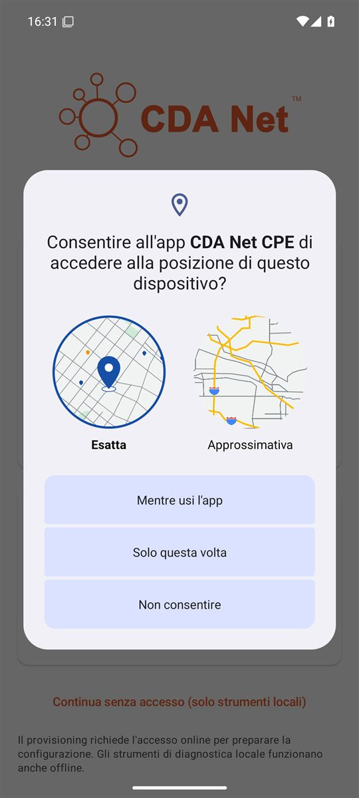
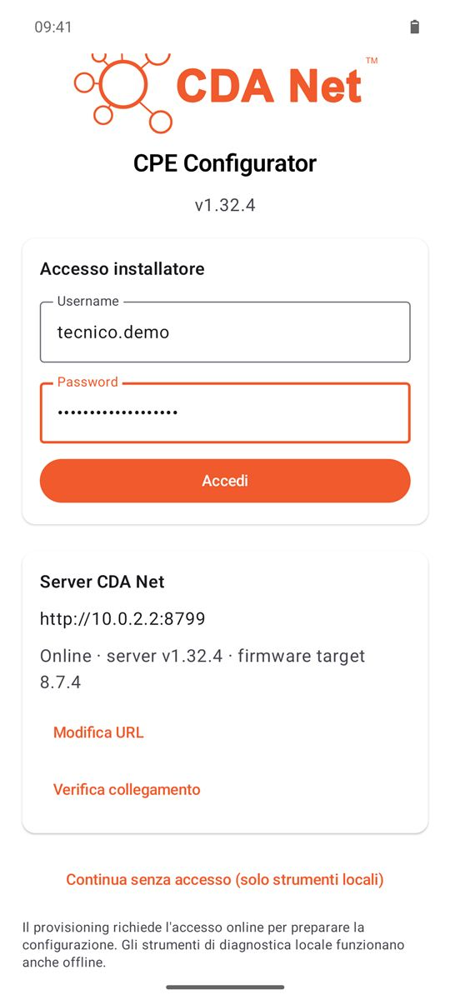
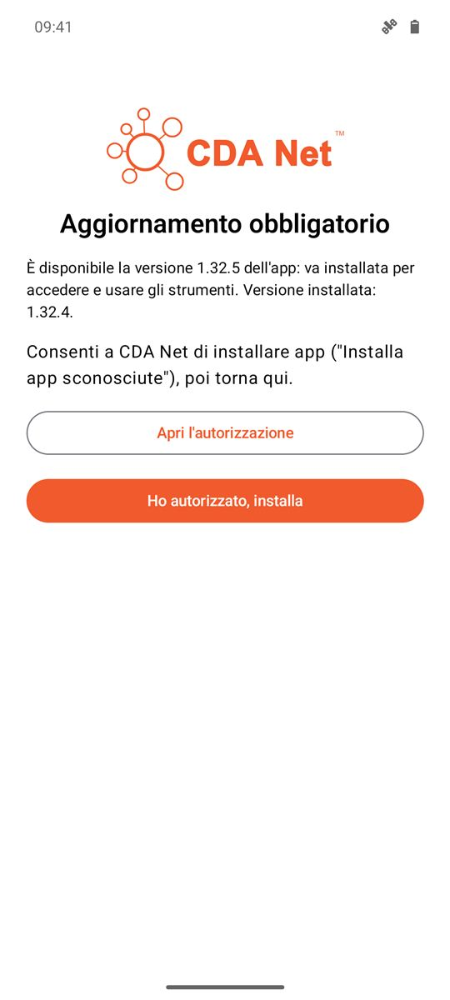
Resti collegato
Dopo il primo accesso con la password l'app resta collegata: le volte successive si apre direttamente, senza password. La sessione si rinnova a ogni apertura e scade solo se non usi l'app per 30 giorni. Torna la richiesta della password se cambi la password, se tocchi Esci, dopo una reinstallazione dell'app o se l'amministratore disattiva l'account. La password non viene mai salvata sul telefono.
Per più sicurezza, in Impostazioni attiva Sblocco con impronta o volto a ogni apertura: l'app chiede impronta o volto ogni volta che la apri o ci torni dopo più di un minuto.
Aggiornamento obbligatorio
Quando il server pubblica una versione nuova dell'app, quella vecchia non permette più di accedere: compare Aggiornamento obbligatorio, il download parte da solo e viene verificato. La prima volta Android chiede di consentire l'installazione da questa origine: tocca Apri l'autorizzazione, attiva l'interruttore, torna indietro e tocca Ho autorizzato, installa.
Il tema chiaro o scuro segue quello del telefono.
3. La schermata principale
In basso c'è la barra con le quattro aree dell'app, sempre a portata di pollice:
- Oggi: la schermata principale;
- Installa: le tue installazioni (da completare, storico, stato delle CPE);
- Rete: stato della rete, guasti Enel, aree di interesse e AP vicini;
- Strumenti: CPE collegata, strumenti di rete e questa guida.
In Oggi, in alto, il riquadro arancione con il tuo nome e i due interventi che fai più spesso: Nuova installazione e Ripuntamento o cambio AP. Se hai un intervento lasciato a metà compare Riprendi l'intervento. Sotto trovi gli interventi di oggi assegnati dall'ufficio, i contatori (installazioni da completare, notifiche, guasti nelle tue zone, CPE con problemi: toccane uno per aprirlo) e le scorciatoie.
In alto a destra, in ogni schermata: la lente cerca un cliente, un MAC o un SSID tra le tue installazioni e le tue CPE; la campanella apre le Notifiche (il numero rosso indica quelle da leggere); l'ingranaggio apre le Impostazioni.
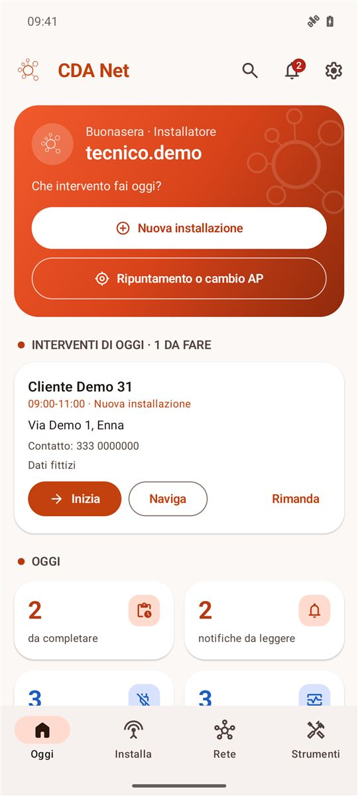
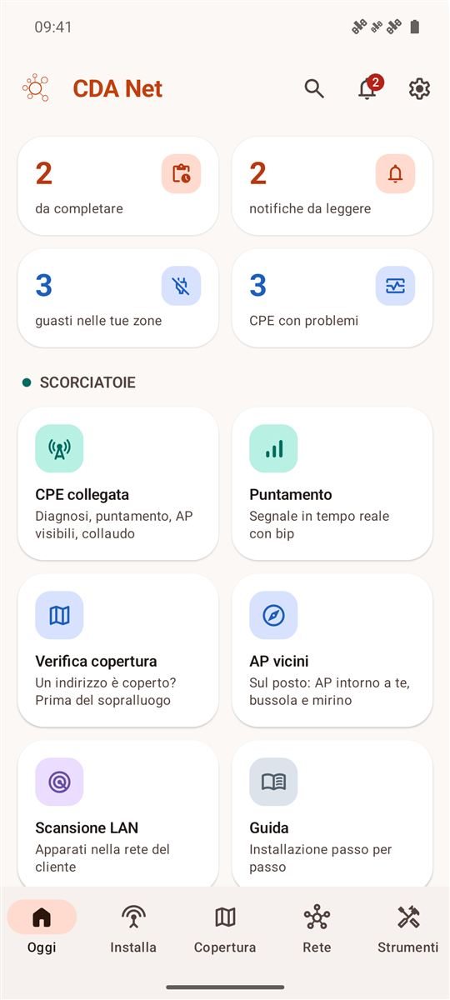
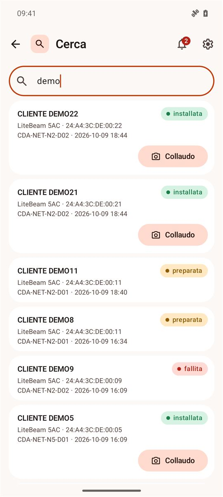
Interventi di oggi
Gli interventi che l'ufficio ti ha assegnato per oggi compaiono in Oggi con cliente, fascia oraria, tipo (nuova installazione, ripuntamento, guasto, sopralluogo), indirizzo, contatto e note:
- Inizia: per una nuova installazione apre il passo 1 con cliente, posizione, modello e utente PPPoE già compilati. La password PPPoE la conosce solo il server: non la vedi e non devi scriverla.
- Naviga: apre il navigatore verso l'indirizzo.
- Rimanda: scrivi il motivo (per esempio cliente assente); l'ufficio lo vede subito.
Notifiche (anche ad app chiusa): ti avvisa quando ti viene assegnato un intervento o ne cambiano giorno e orario, e ricorda ogni intervento 24 ore, 2 ore, 1 ora e 30 minuti prima. Se 30 minuti dopo l'orario non l'hai iniziato, ti avvisa che è in ritardo; se il giorno passa senza esito, che non è stato fatto. In entrambi i casi lo sa anche l'ufficio (NOC).
Collaudo all'indirizzo giusto: per un intervento avviato da qui il collaudo si salva solo se sei entro 500 metri dall'indirizzo del cliente. Se sei più lontano l'app lo blocca e ti dice la distanza: controlla di essere dal cliente giusto o fai correggere l'indirizzo all'ufficio, che riceve la segnalazione.
Quando il provisioning riesce, l'intervento si chiude da solo. Con Internet l'app scarica in anticipo anche gli AP intorno a ogni indirizzo, così AP vicini funziona pure su un tetto senza segnale.
Se compare un avviso arancione in alto (per esempio collaudi in attesa di invio) non devi fare nulla: i dati partono da soli appena il telefono torna online.
4. Nuova installazione passo per passo
Simuliamo l'installazione di una LiteBeam 5AC per il cliente CLIENTE DEMO11, in Via Demo 1. Dalla Home tocca Nuova installazione. In alto vedi sempre il passo in cui sei, con la barra di avanzamento e le etichette dei passi (quelli fatti hanno la spunta verde). Da lì Segnala KO (vedi più sotto) e Termina, che chiude l'intervento in qualsiasi momento e torna alla scelta qui sotto.
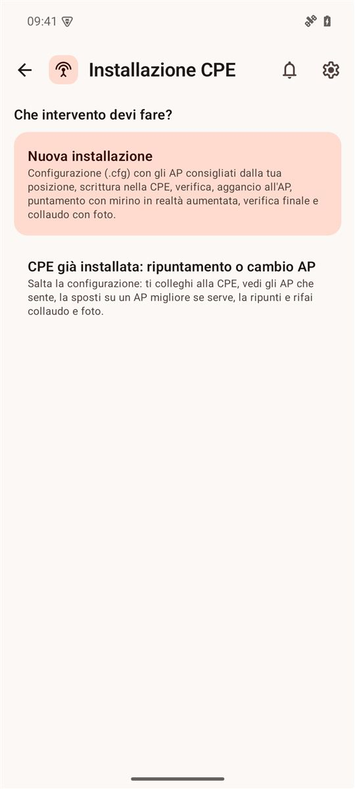
| Passo | Cosa fai | Internet |
|---|---|---|
| 1 · Configurazione | Modello, MAC, posizione, AP, dati PPPoE; il server prepara la configurazione | Sì |
| 2 · Scrittura nella CPE | Ti colleghi alla Wi-Fi della CPE e l'app scrive la configurazione | No |
| 3 · Verifica della CPE | Controllo automatico di quanto scritto | No |
| 4 · Aggancio all'AP | Vedi gli AP che la CPE sente e scegli il migliore | No |
| 5 · Puntamento | Segnale in tempo reale, bip, mirino in realtà aumentata | No |
| 6 · Verifica finale e collaudo | Controlli, misure, test di velocità, foto e note | Per l'invio |
Passo 1 · Configurazione
- Modello: scegli il modello della CPE. Il Template si imposta da solo. Se compare "Nessun template airOS per …" quel modello non è ancora pronto: avvisa l'amministratore.
- MAC e Seriale: tocca Scansiona etichetta (barcode/QR) sull'etichetta della CPE (o scrivili da lì). Il MAC dell'etichetta è quello della LAN, lo stesso che usa la rete per riconoscere la CPE. Sotto il campo vedi il MAC nel formato che verrà usato. Prima di scrivere la configurazione l'app controlla che il MAC sia proprio quello della CPE collegata.
- Rileva il modello dalla CPE: collegato alla Wi-Fi della CPE, l'app chiede alla CPE il suo modello e lo imposta.
- Posizione CPE e AP consigliati: tocca Usa GPS del telefono stando nel punto dove monterai l'antenna, oppure cerca l'indirizzo. L'app propone gli AP consigliati da qui con distanza, direzione, tilt e segnale stimato; il primo è già scelto, con Usa ne prendi un altro. Con Visibilità controlli prima di salire se il terreno copre l'AP.
- Wireless Station: nodo, distretto ed eventuale Rilancio si compilano dall'AP scelto; l'SSID risultante è del tipo
CDA-NET-N2-D01(con rilancioCDA-NET-N2-D01-R1). - Router / PPPoE: utente e password PPPoE del cliente. Dall'utente l'app ricava il nome del dispositivo (es. CLIENTE DEMO11). La password serve solo per questo provisioning e non viene salvata.
- Con Verifica piano vedi l'elenco di tutto quello che verrà scritto nella CPE. Poi tocca Prepara provisioning.
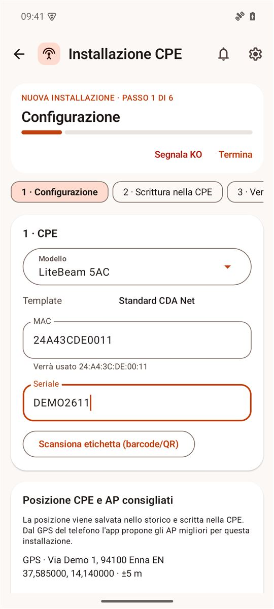
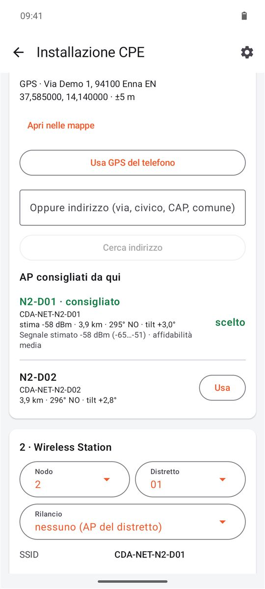
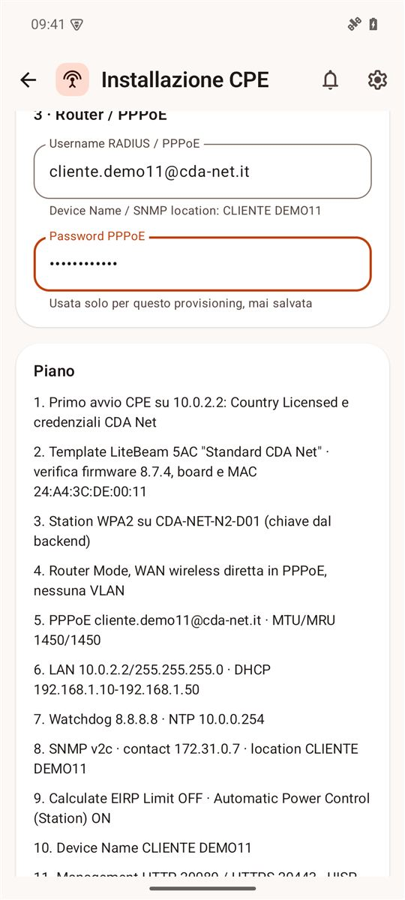
Passo 2 · Scrittura nella CPE
- Collega il telefono alla Wi-Fi di management della CPE (nome tipo
LBE-5AC-Gen2:xxxx, IP192.168.172.1). Se Android avvisa che la rete non ha Internet, scegli di restare connesso. Apri impostazioni Wi-Fi ti porta direttamente lì. - Tocca Rileva CPE per controllare che l'app la veda.
- Primo avvio airOS: se la CPE è nuova o resettata, apri l'interfaccia con Apri interfaccia CPE nell'app e completa il primo accesso: Country Licensed, accetta i termini, imposta le credenziali CDA Net.
- Applica alla CPE: l'app controlla firmware, modello e MAC, scrive la configurazione, la salva e riavvia la CPE. Ogni fase compare con una spunta. Al termine tocca Avanti: verifica della CPE.
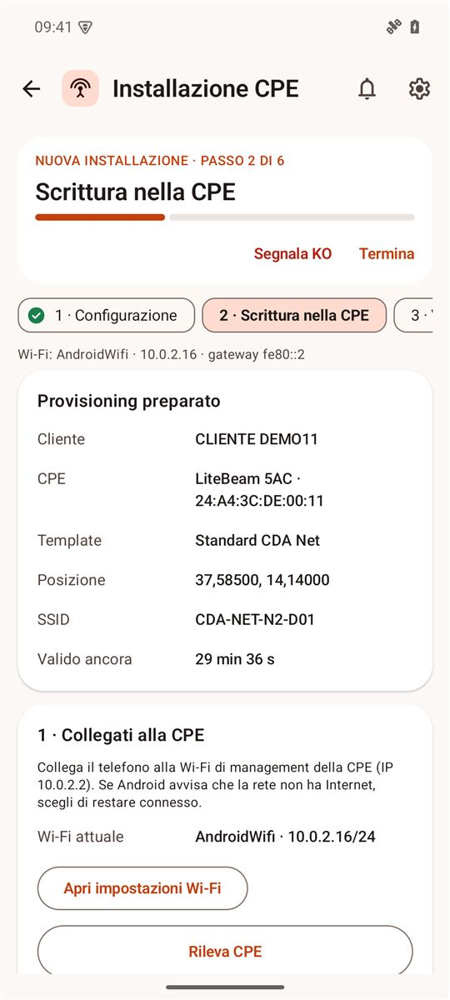
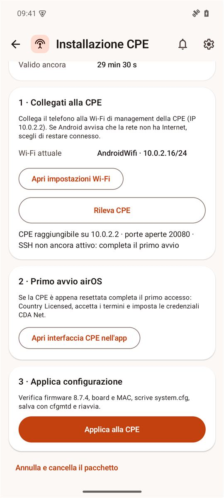
Passo 3 · Verifica della CPE
Dopo il riavvio (1-2 minuti) l'app ritrova da sola la CPE sulla Wi-Fi a cui sei collegato e mostra nome, modello, firmware, MAC e SSID configurato, più i dati dell'installazione registrata sul server. Se non la trova, usa IP manuale; se la CPE non accetta le credenziali standard, Credenziali diverse (restano solo in memoria).
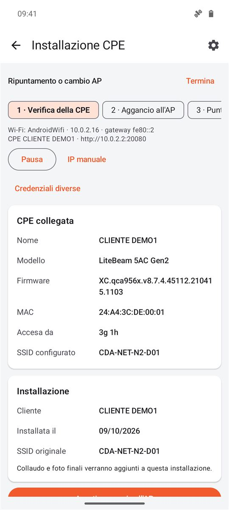
Passo 4 · Aggancio all'AP
Collegamento attuale mostra a quale AP è agganciata la CPE, con segnale, SNR e modulazione. Tocca Scansiona dalla CPE: è la radio della CPE, non il telefono, a cercare gli AP, quindi la lista è quella che conta davvero. Durante la scansione il collegamento può interrompersi per qualche secondo.
Gli AP CDA Net sono in cima; il migliore è segnato consigliato e, se è diverso da quello attuale, un avviso lo propone. Le altre reti (vicini, ponti radio) restano nascoste sotto Altre reti sentite.
Per cambiare AP tocca Aggancia: la CPE passa al nuovo SSID con la sua chiave WPA2 (arriva dal server, non devi conoscerla), salva e si riavvia. Con Blocca la CPE su questo AP la CPE resta su quell'AP anche se ne sente altri.
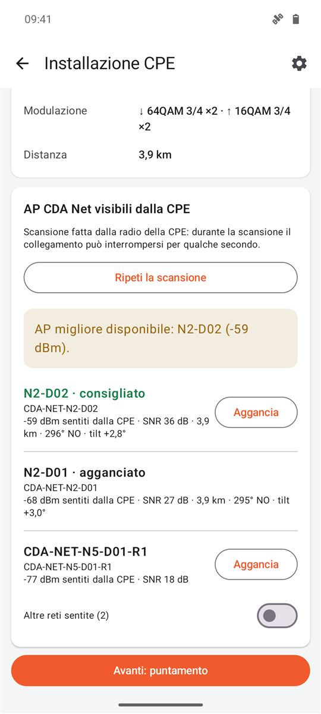
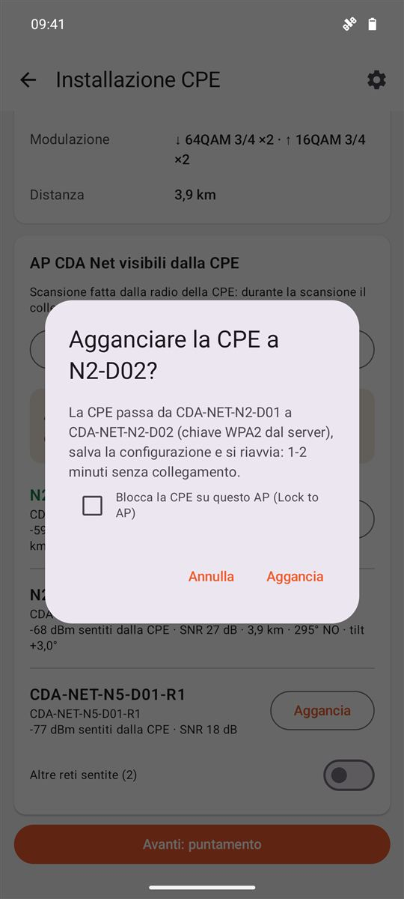
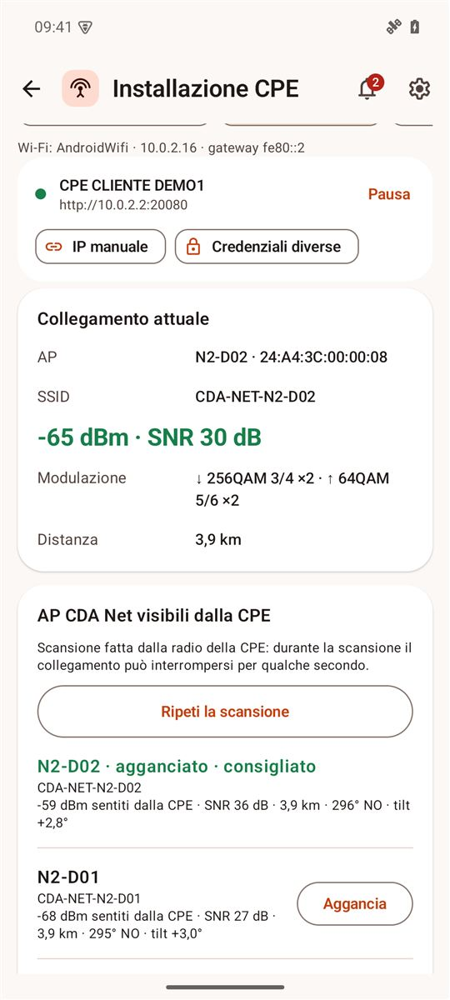
Passo 5 · Puntamento
Il numero grande è il segnale ricevuto dalla CPE, aggiornato di continuo, con il valore atteso calcolato dall'AP e il picco raggiunto. Il grafico mostra l'andamento: la linea verde tratteggiata è la soglia "buono", quella rossa il minimo accettabile. Ruota lentamente l'antenna in orizzontale, poi in verticale, e fermati sul picco. Sotto il numero ci sono gli aiuti per il tetto, da usare con il telefono in tasca o appoggiato al palo:
- Bip: il tono sale quando il segnale migliora;
- Voce: l'app legge il segnale ad alta voce (meno 58);
- Vibra al picco: una vibrazione ogni volta che superi il picco raggiunto.
Durante il puntamento, la bussola, il mirino e tutta l'installazione lo schermo resta acceso.
Sotto trovi la direzione dell'AP (azimut, tilt, distanza) e i pulsanti per Mirino in realtà aumentata, Bussola verso l'AP, Mappa e lista degli AP e il Puntamento a schermo intero. Azzera picco e grafico ricomincia la misura.
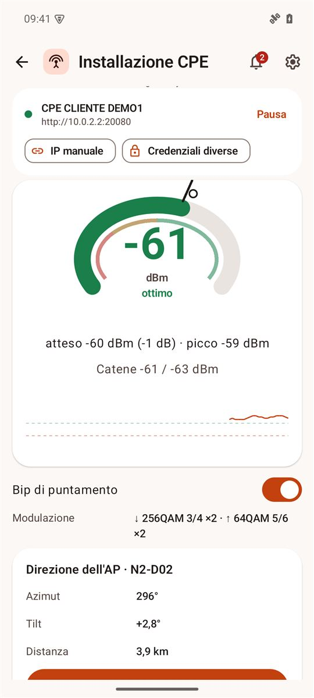
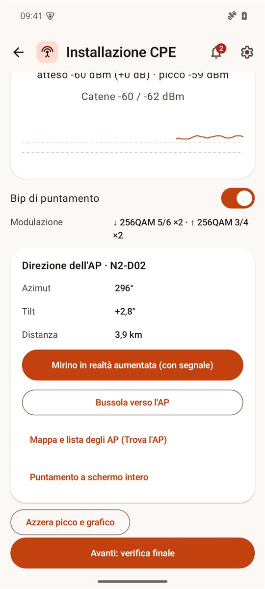
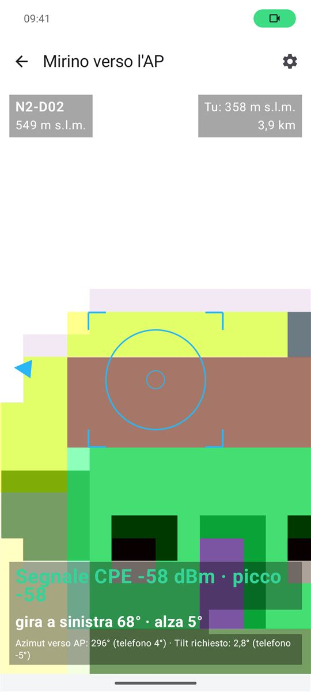
Passo 6 · Verifica finale e collaudo
Il banner in alto dice subito se l'installazione è nei parametri. Sotto ci sono tutte le misure radio e i controlli con spunta verde, avviso arancione o errore rosso, ognuno con cosa fare.
Tocca Apri il collaudo:
- Altezza della CPE dal suolo (in metri, es. 7,5): dal terreno all'antenna montata. È obbligatoria e va nel verbale.
- Misure radio: Avvia misura fa 10 letture in 10 secondi e ne fa la media.
- Internet dal lato cliente: collega il telefono alla Wi-Fi del router del cliente e tocca Misura Internet (velocità e ping verso il server CDA Net passano dalla nuova linea).
- Foto (fino a 8): antenna, staffa/palo, cablaggio, router del cliente, altro.
- Note per il NOC, facoltative.
- Salva e invia collaudo. L'esito (superato, con riserva, non superato) è calcolato con le soglie del NOC. Senza rete il collaudo resta in coda e parte da solo dopo. Se il server lo rifiuta, l'app te lo dice: non risulta mai registrato un collaudo che non è arrivato.
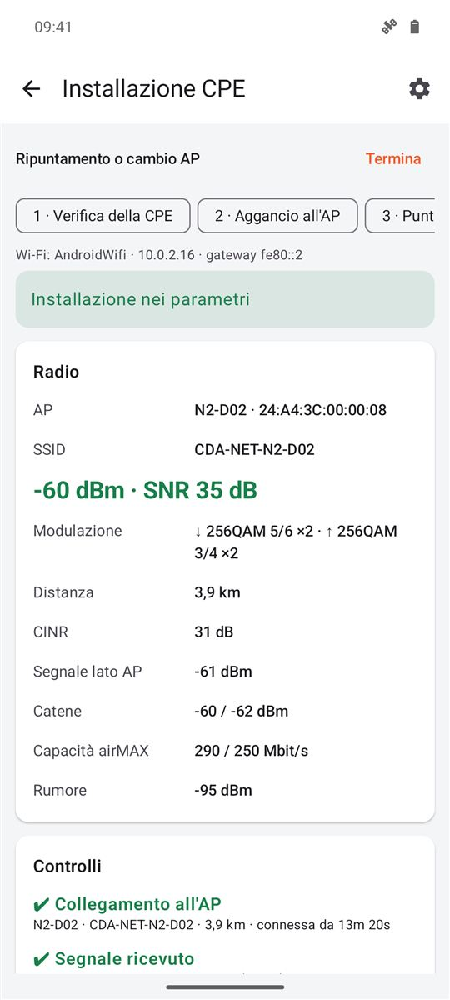
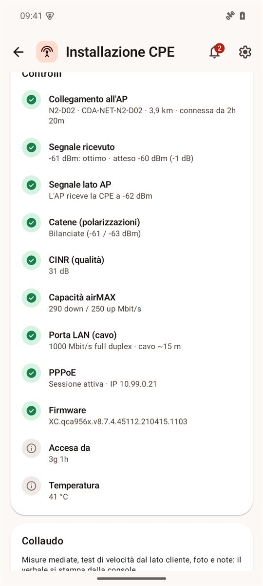
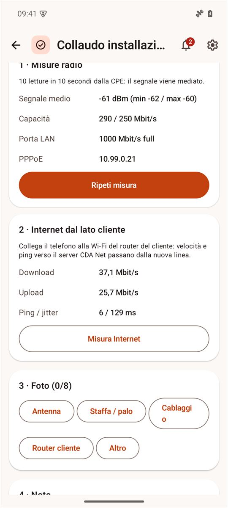
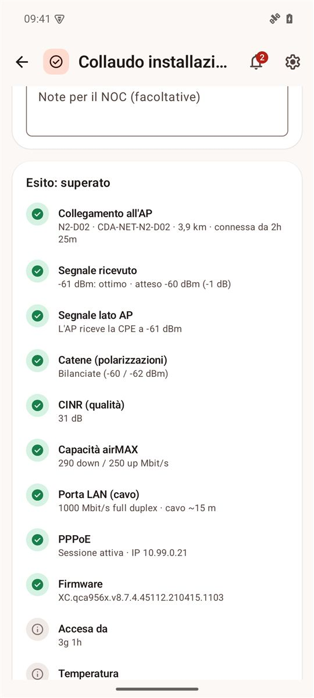
Con Fine intervento hai finito. Il verbale di collaudo si stampa dalla console web.
Segnale pessimo: serve l'approvazione del NOC
Se il segnale è sotto il minimo (−75 dBm) o un controllo radio è rosso (segnale, CINR, capacità, catene, collegamento), l'app lo dice già nella verifica finale. Il collaudo si salva come sempre, ma l'installazione resta in attesa dell'approvazione del NOC. Il NOC la approva o la rifiuta con una nota: l'esito ti arriva nelle Notifiche (e su Telegram, se collegato). Se è rifiutata, ripunta o cambia AP e rifai il collaudo.
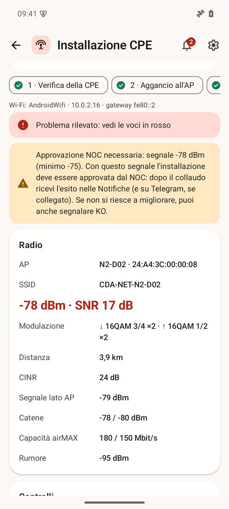
Se non si riesce: Segnala KO
In ogni passo, in alto, c'è Segnala KO (anche nell'esito del collaudo). Scegli:
- Rimandata: si riprova un altro giorno (maltempo, cliente assente, materiale mancante…). Scrivi la motivazione e, se concordato, quando riprovare.
- KO definitivo: l'installazione non si può fare (nessun AP visibile, ostacoli…). La motivazione è sempre obbligatoria.
Scegli il motivo dalla lista e scrivi la motivazione. Fase, SSID, segnale e MAC li allega l'app da sola. Il NOC viene avvisato subito. Non blocca nulla: dopo l'invio puoi Riprovare ora (altro AP, nuovo puntamento) o Chiudere l'intervento e riprendere un altro giorno. Quando un tentativo successivo supera il collaudo, la segnalazione si chiude da sola. Anche una scrittura nella CPE fallita si può ritentare con lo stesso pacchetto.
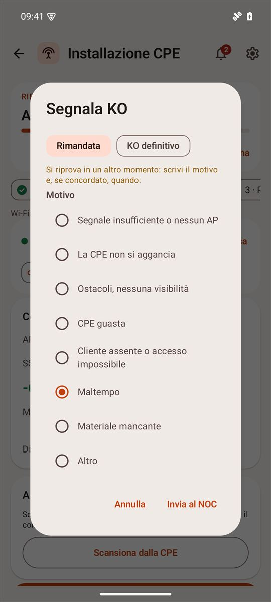
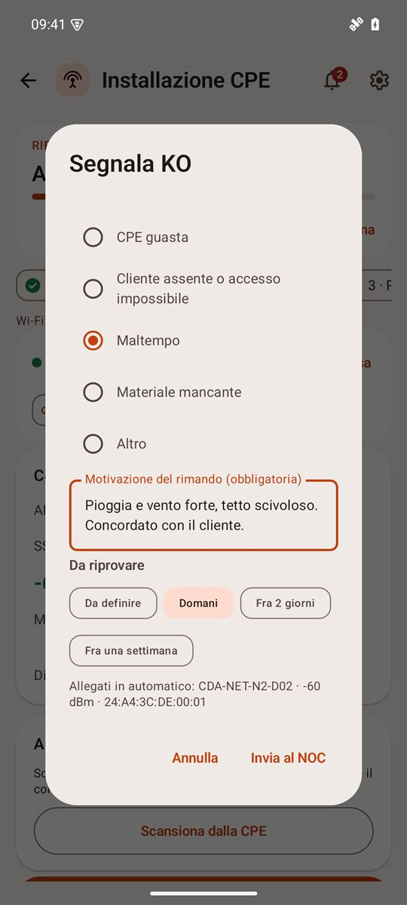
5. Ripuntamento, cambio AP, sostituzione
CPE già installata: ripuntamento o cambio AP salta configurazione e scrittura: ti colleghi alla Wi-Fi della CPE o del router del cliente, l'app trova la CPE e riparti da Verifica della CPE. Se la CPE era stata installata con l'app, collaudo e foto finali si aggiungono a quell'installazione; altrimenti il collaudo si può condividere ma non salvare sul server.
Ci arrivi anche da Installa → Stato CPE con il pulsante Ripuntamento su una CPE con segnale calato.
Sostituzione CPE (antenna guasta): dallo Storico apri l'installazione e tocca Sostituisci CPE. Parte una nuova installazione con i dati del cliente già compilati: inserisci il MAC della CPE nuova e prosegui come al passo 1.
6. Dopo l'installazione
Tutto si trova in Installa, nella barra in basso, con tre schede: Da completare (installazioni con collaudo mancante, rifiutato dal NOC o scrittura fallita, con il pulsante per riprenderle), Storico e Stato CPE.
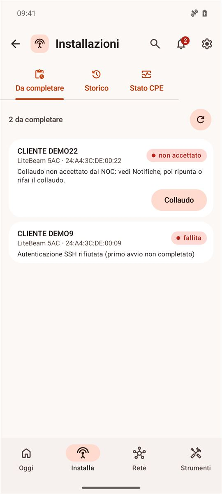
Storico
Tutti i tuoi provisioning, con esito (Preparato, Completato, Fallito con il motivo), collaudo, eventuali rimandi o KO e approvazione del NOC. Da qui apri Storico segnale (7 giorni), Collaudo / foto e Sostituisci CPE.
Notifiche
La campanella in alto (e la voce Notifiche nella schermata principale) mostra l'esito delle tue installazioni: approvazione o rifiuto del NOC con la sua nota, e l'attivazione della CPE in rete. Tocca una notifica per segnarla come letta. Per riceverle anche su Telegram collega il tuo Telegram (in Notifiche o in Impostazioni). Nella console web, in Notifiche, scegli quali ricevere anche lì.
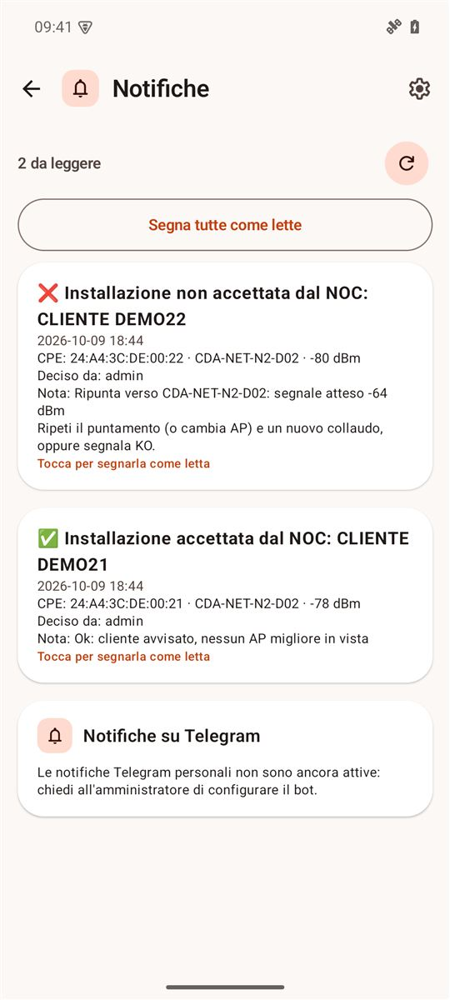
Stato CPE (le mie CPE)
Lo stato attuale delle CPE che hai installato, confrontato con il collaudo: offline, segnale debole, segnale calato (almeno 6 dB in meno rispetto al collaudo), porta LAN lenta. Puoi cercare per cliente, MAC, AP o SSID e filtrare. Tocca una CPE per i dettagli, lo storico di 7 giorni e il ripuntamento.
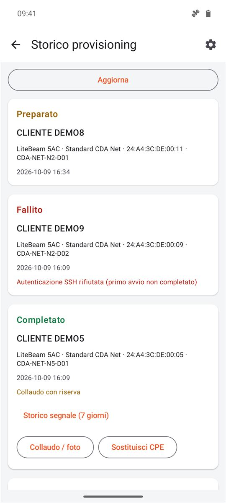
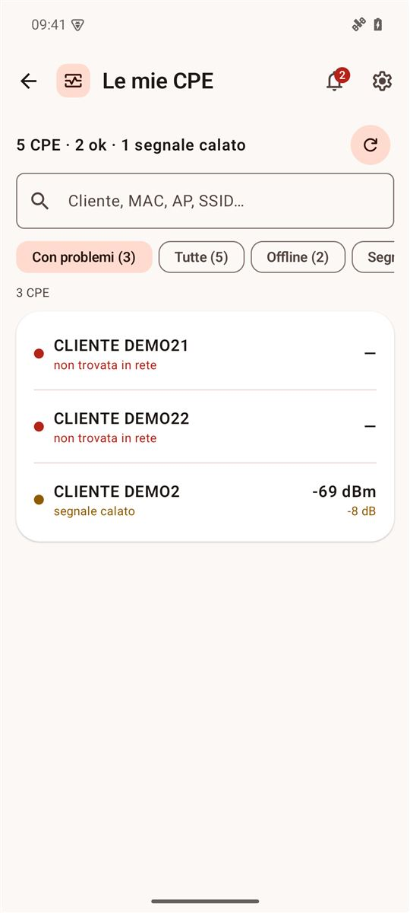
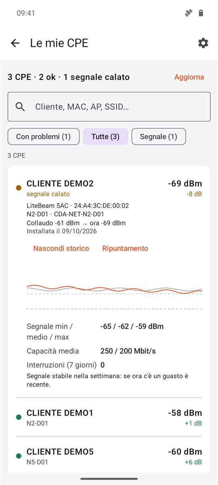
7. Strumenti di campo
CPE collegata
Tutto quello che fai con la CPE in mano, collegandoti una sola volta alla sua Wi-Fi (o a quella del router del cliente). La apri da Strumenti o dalle scorciatoie di Oggi. Ha cinque schede:
- Diagnosi: per i guasti. Ti dice in rosso cosa non va (non agganciata, PPPoE non attivo, cavo LAN, firmware, riavvii frequenti); con Condividi rapporto mandi il riepilogo al NOC.
- Puntamento: lo stesso strumento del passo 5, con Bip, Voce e Vibra al picco.
- AP visibili: la scansione fatta dalla radio della CPE, con l'aggancio a un altro AP (vedi passo 4).
- Collaudo: misure, test Internet, foto e note (vedi passo 6).
- Firmware: porta la CPE alla versione richiesta (vedi sotto).
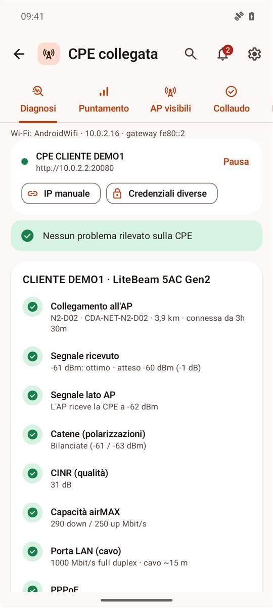
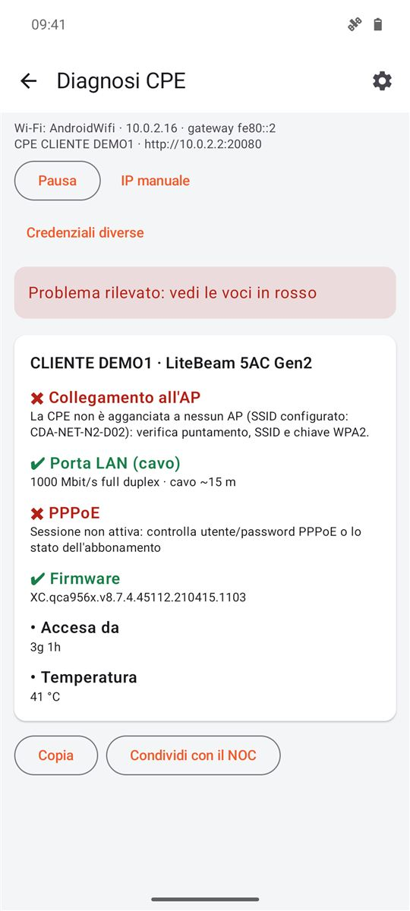
AP vicini
In Rete → AP vicini. Con Da qui parti dal GPS del telefono, con Da un indirizzo prepari il sopralluogo dall'ufficio. Vedi gli AP sulla mappa (aree approssimative, con la linea di puntamento dalla tua posizione) e in lista con distanza, altitudine, azimut, tilt e segnale stimato dalle CPE già collegate in zona. Gli AP sono in ordine di segnale stimato: prima i buoni, poi i possibili e quelli senza stima; a parità, il più vicino. Gli AP spenti o troppo deboli non compaiono. Imposta l'altezza della CPE dal suolo per un tilt più preciso. Da ogni AP apri Mirino, Bussola o Visibilità. I ponti radio non compaiono: solo AP a cui si possono agganciare i clienti.
Senza rete: ogni ricerca riuscita resta sul telefono per 14 giorni, e quelle intorno agli interventi del giorno vengono scaricate in anticipo. Se sul tetto non c'è segnale, l'app usa i dati salvati entro 400 m e te lo dice. La mappa invece richiede Internet: usa lista, bussola e mirino.
Visibilità verso l'AP
Prima di salire, Visibilità disegna il profilo del terreno tra te e l'AP, la linea di vista e la zona che deve restare libera per un buon segnale (60% della prima zona di Fresnel). Dice se la vista è libera, se il terreno entra nella zona di Fresnel (il segnale può calare) o se è ostruita, e di quanto alzare il palo; quando nessun palo realistico basta, ti suggerisce un altro AP. Conta solo il terreno: edifici e alberi vanno verificati a vista.
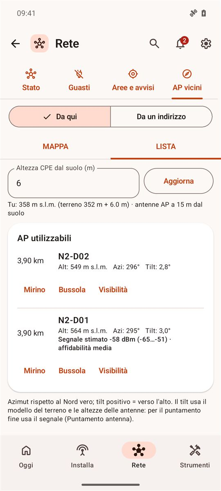
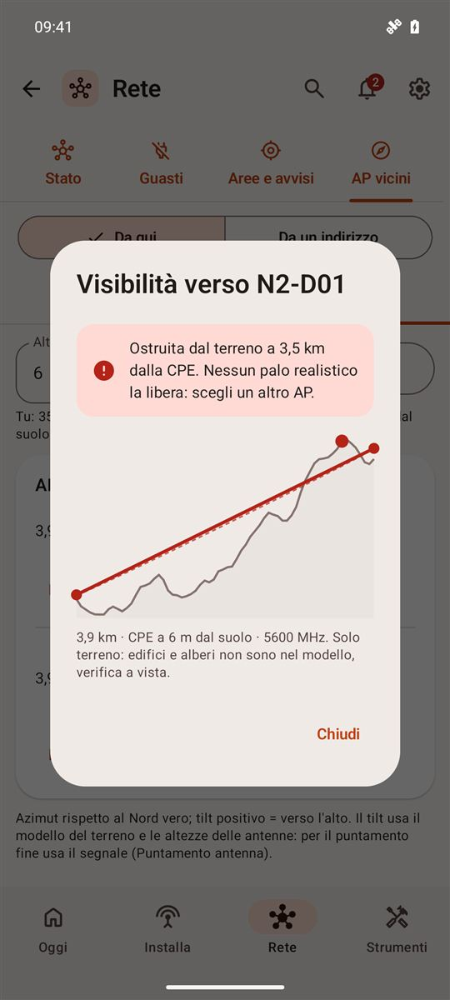
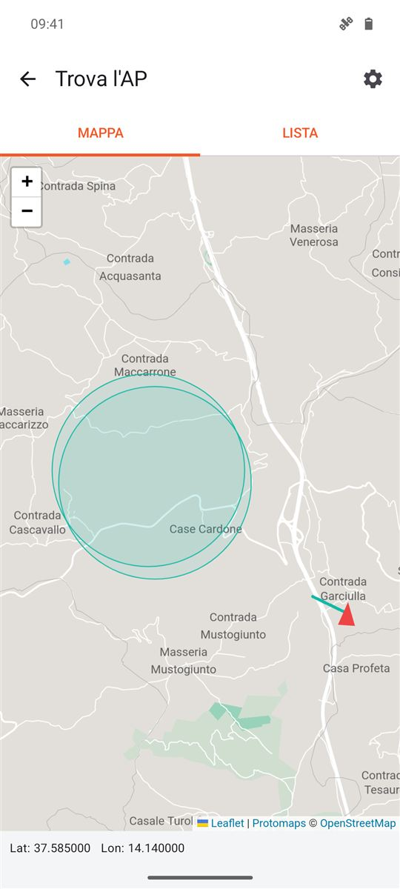
Aggiornare il firmware della CPE
La configurazione si scrive solo su CPE con il firmware richiesto (8.7.4). Se la CPE ne ha un altro, l'app blocca la scrittura e ti manda qui. Questa funzione è disponibile se l'ha attivata l'amministratore.
- Con Internet, in CPE collegata → Firmware, tocca Scarica sul firmware della piattaforma che usi (es. XC · 8.7.4). Il file resta sul telefono, controllato.
- Sulla Wi-Fi della CPE tocca Leggi la versione della CPE: vedi piattaforma e versione attuali.
- Tocca Aggiorna a 8.7.4 e conferma. L'app controlla che il firmware sia quello della piattaforma della CPE e che sia arrivato integro, poi la CPE si aggiorna e si riavvia da sola (3-5 minuti).
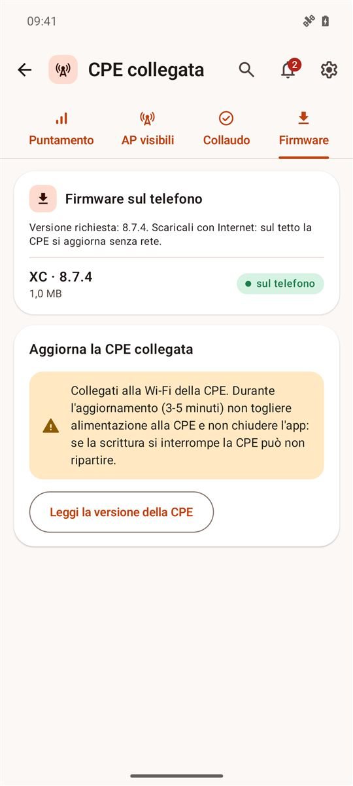
8. Stato rete e guasti Enel
In Rete, nella barra in basso, con quattro schede: Stato, Guasti, Aree e avvisi e AP vicini.
Stato
I POP e gli AP che ti sono assegnati, aggiornati ogni minuto: raggiungibili o no, AP con molte CPE offline (probabile problema di settore) e il simbolo ⚡ quando c'è un guasto Enel vicino. All'apertura vedi solo quelli con problemi; con Tutti li vedi tutti.
Guasti
Le interruzioni della rete elettrica nelle tue zone: mappa e lista compatta (guasti in media tensione in rosso, bassa tensione in arancio, lavori programmati in grigio). Tocca una riga per i dettagli: ripristino previsto, POP/AP potenzialmente impattati, Sulla mappa (centra la mappa sul guasto) e Navigatore.
Aree e avvisi
Notifiche sul telefono: attivale per essere avvisato anche ad app chiusa. Le mie aree di interesse sono i luoghi che vuoi seguire anche fuori dai POP/AP che ti sono assegnati: casa, una frazione, il paese di un cliente. Aggiungi un'area dal GPS o da un indirizzo, con il raggio. Per ogni area scegli quali avvisi ricevere:
- Guasti MT (media tensione), Guasti BT (bassa tensione), Lavori programmati;
- con l'interruttore la metti in pausa: non ti avvisa, ma i guasti restano in elenco;
- Raggio cambia l'estensione, Elimina la toglie.
Accanto al nome vedi quanti guasti ci sono ora nell'area. Le stesse regole valgono per le notifiche Telegram, che si collegano in Impostazioni.
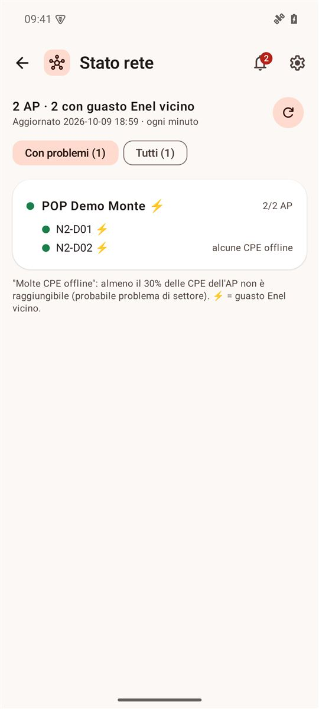
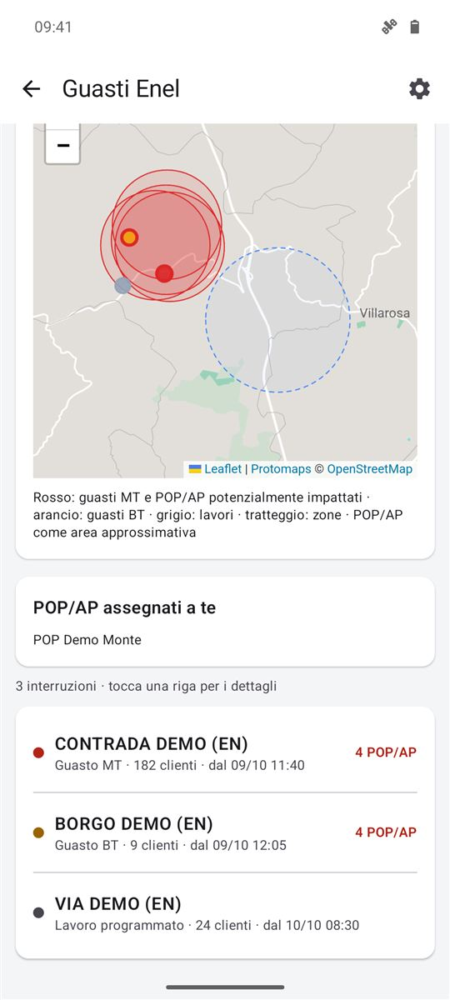
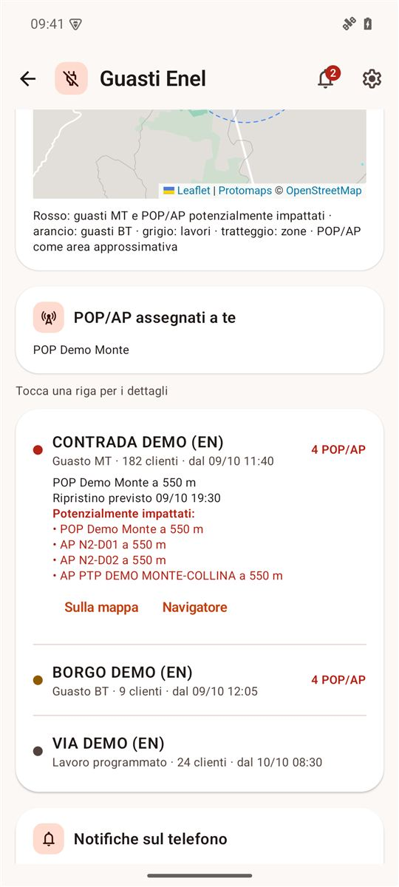
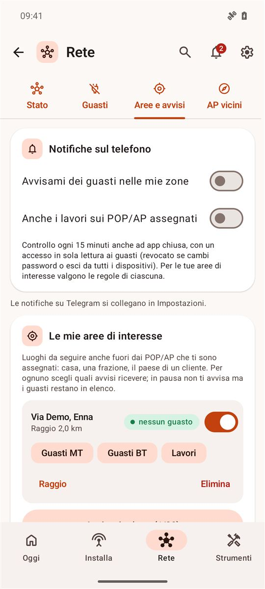
9. Strumenti di rete
In Strumenti, nella barra in basso, divisi per gruppi (con la CPE, rete del cliente, aiuto). Funzionano anche senza accesso al server (Continua senza accesso), sulla rete a cui è collegato il telefono:
| Strumento | A cosa serve |
|---|---|
| Wi-Fi Analyzer | Reti, canali e segnale intorno a te; Router del cliente dice canale e larghezza da impostare (2.4 e 5 GHz) e se cambiarli |
| Strumenti di rete | Stato connessione, ping, traceroute, DNS, speed test verso il server CDA Net |
| Scanner IP | Host attivi nella LAN: nome, produttore, tipo di apparato, porte principali; elenco o mappa di rete, esportazione CSV |
| Port scanner | Porte aperte su un host, con banner, header HTTP e certificati TLS |
| Diagnostica di rete | Ping continuo, MTU di percorso, DNS avanzato, prova HTTP, Wake-on-LAN |
| Discovery LAN | Apparati trovati con discovery Ubiquiti, NetBIOS, SNMP e ARP; da ogni apparato Apri web, Copia IP, Porte |
| SNMP v2c | Interroga un apparato in LAN |
| TVCC | Telecamere ONVIF e Hikvision (SADP), anteprima RTSP, calcolo della banda |
| MikroTik · RouterOS | Consultazione in sola lettura via SSH |
| Accesso remoto | SSH e Remote Desktop con app esterne |
Canale del router del cliente
Nel Wi-Fi Analyzer, vicino al router del cliente, il riquadro Router del cliente sceglie la rete del router (quella a cui è collegato il telefono, o una delle più forti) e riconosce da solo le due bande dello stesso router (es. Casa e Casa_5G). Per ogni banda vedi il canale attuale, quanto è libero e se va bene o è da cambiare, con canale e larghezza consigliati: in 2.4 GHz solo 1, 6 o 11 a 20 MHz; in 5 GHz 80 MHz quando un blocco intero è libero, preferendo i canali non DFS.
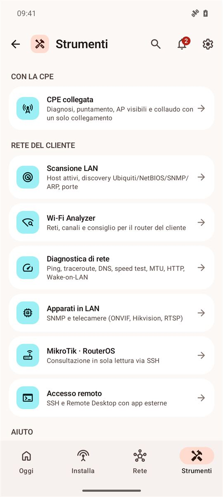
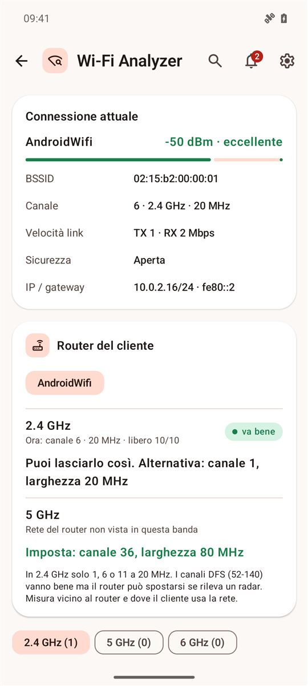
10. Impostazioni
Dall'ingranaggio: il tuo account, Esci (scollega questo telefono: la prossima volta serve la password), Cambia password (almeno 12 caratteri), Accesso su questo telefono (fino a quando resti collegato e l'opzione Sblocco con impronta o volto a ogni apertura), Notifiche su Telegram, Esci da tutti i dispositivi (telefono perso) e l'indirizzo del server.
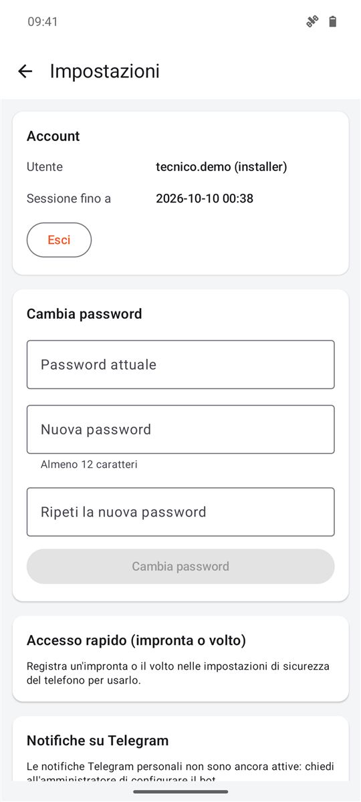
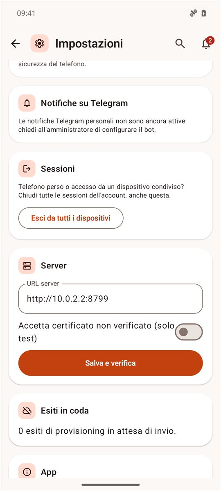
11. La console web
Dal computer apri l'indirizzo del server e accedi con lo stesso utente dell'app. La configurazione delle CPE si fa solo dall'app; la console serve per consultare, esportare e stampare.
| Voce | Cosa trovi |
|---|---|
| I miei interventi | Gli interventi assegnati dall'ufficio, per giorno, con stato e note |
| Storico provisioning | I tuoi provisioning con ricerca, filtri per esito e date, esportazione CSV; apri il collaudo e stampa il verbale |
| Le mie CPE | Stato delle tue CPE rispetto al collaudo, con filtri, ricerca, storico ed esportazione CSV |
| Guasti Enel | Riepilogo, mappa e lista dei guasti nelle tue zone; le tue aree di interesse con le regole di ciascuna |
| Stato rete | I tuoi POP e AP: in funzione, non raggiungibili, molte CPE offline, guasto Enel vicino |
| Template disponibili | I modelli di CPE pronti per l'installazione |
| Copertura | AP consigliati per un indirizzo o delle coordinate (prima il segnale stimato migliore), con mappa |
| MikroTik · RouterOS | Consultazione in sola lettura |
| Il mio account | Password, verifica in due passaggi, sessioni, telefoni collegati (scollegali da qui se perdi il telefono), Telegram |
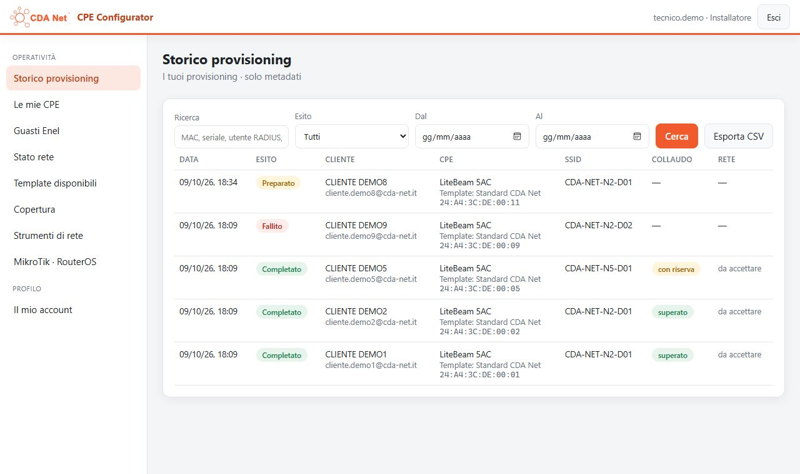
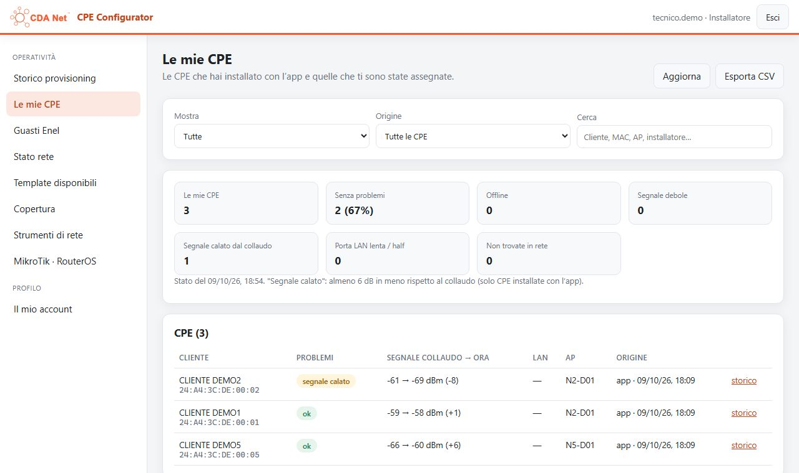
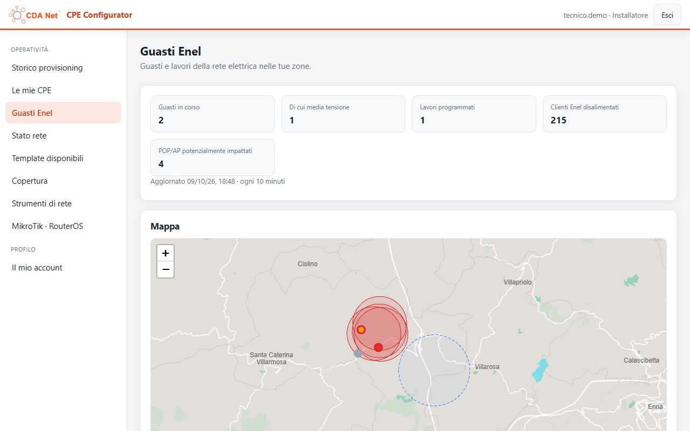
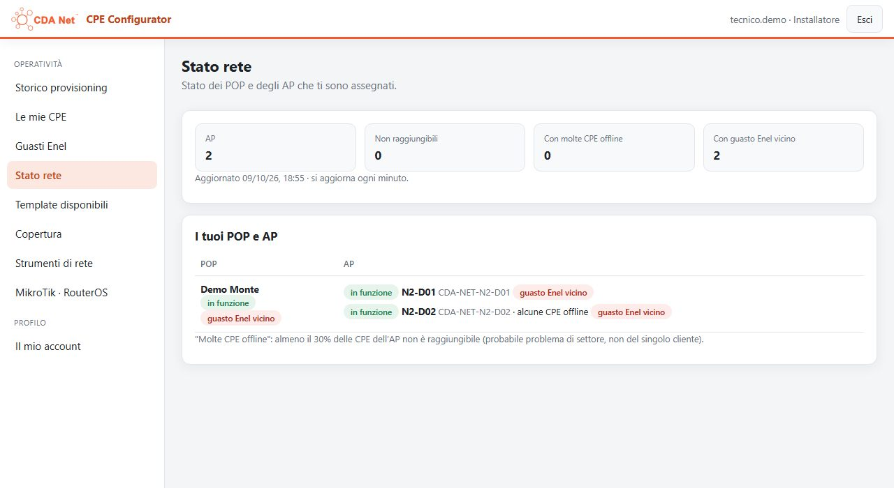
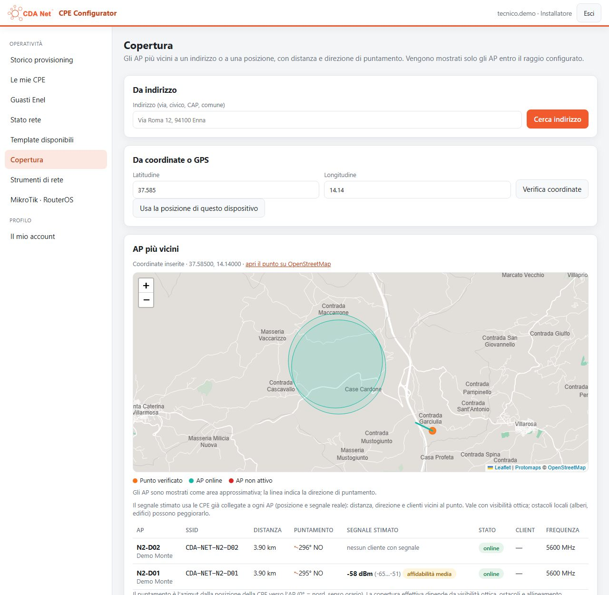
12. Problemi frequenti
| Problema | Cosa fare |
|---|---|
| Al login: "Aggiornamento obbligatorio" | Lascia scaricare l'aggiornamento e installalo: senza, l'app non permette di accedere. |
| Server non raggiungibile (Verifica collegamento) | Controlla la connessione dati o Wi-Fi; se sei sulla Wi-Fi della CPE il server non è raggiungibile, è normale. |
| "Nessun template airOS per …" | Quel modello non è ancora configurato: avvisa l'amministratore. |
| Pacchetto scaduto | Sono passati più di 30 minuti: torna online e rifai Prepara provisioning. |
| "Nessuna CPE airOS trovata" | Controlla di essere sulla Wi-Fi della CPE (o del router del cliente) e di essere rimasto connesso anche senza Internet; prova IP manuale. |
| "Autenticazione SSH rifiutata" | Il primo avvio airOS non è completo: aprilo dall'app, completalo e riprova con lo stesso pacchetto. |
| La CPE rifiuta le credenziali | La CPE non usa le credenziali CDA Net (configurata a mano o non provisionata): usa Credenziali diverse. |
| Segnale sotto −75 dBm | Rivedi il puntamento, cerca ostacoli, prova un altro AP dalla scansione della CPE o alza l'antenna. |
| Catene sbilanciate (oltre 6 dB) | Possibile ostacolo o riflessione, oppure antenna non allineata in elevazione: correggi il tilt. |
| Porta LAN a 100 Mbit/s o half duplex | Cavo o connettore danneggiato: rifai i plug o cambia cavo. |
| PPPoE non attivo | Controlla utente e password PPPoE o lo stato dell'abbonamento con l'ufficio. |
| Collaudo in attesa di invio | Nessuna azione: parte da solo appena c'è rete. |
| "Sessione scaduta: accedi di nuovo con la password" | Non hai usato l'app per 30 giorni, hai cambiato password o l'amministratore ha scollegato il telefono: accedi di nuovo. |
| "Firmware rilevato … è richiesto 8.7.4" | Aggiorna la CPE da CPE collegata → Firmware, poi riprova con lo stesso pacchetto. |
| "C'è un problema tra i dati dell'intervento e la tua posizione" | Sei a più di 500 m dall'indirizzo dell'intervento: verifica il cliente, spostati all'aperto se il GPS è impreciso, oppure chiedi all'ufficio di correggere l'indirizzo. |
| "Il GPS del telefono è spento" | Attiva la localizzazione (tendina rapida o Impostazioni → Posizione): installazioni e interventi ripartono subito. |
| Visibilità ostruita | Il terreno copre l'AP: prova un altro AP o un punto più alto; edifici e alberi vanno controllati a vista. |
| AP vicini: "uso gli AP salvati" | Sei senza rete: i dati sono quelli salvati vicino a te. Azimut e tilt sono calcolati da quel punto. |
13. Glossario
| CPE | L'antenna sul tetto del cliente. |
| AP | L'antenna del POP a cui si collegano le CPE di una zona. |
| POP | Il sito (traliccio) con uno o più AP. |
| Distretto, nodo, rilancio | Compongono l'SSID dell'AP: CDA-NET-N<nodo>-D<distretto>, con -R<n> per un AP di rilancio. |
| dBm | Potenza del segnale: più vicino a zero è meglio (−58 è meglio di −70). |
| SNR / CINR | Quanto il segnale supera rumore e interferenze, in dB: più alto è meglio. |
| Catene | Le due polarizzazioni dell'antenna: devono ricevere valori simili. |
| Azimut / tilt | Direzione orizzontale (0° = nord) e inclinazione verticale verso l'AP. |
| PPPoE | L'accesso a Internet del cliente, con utente e password RADIUS. |
| Collaudo | Le misure finali, foto e note che certificano l'installazione. |